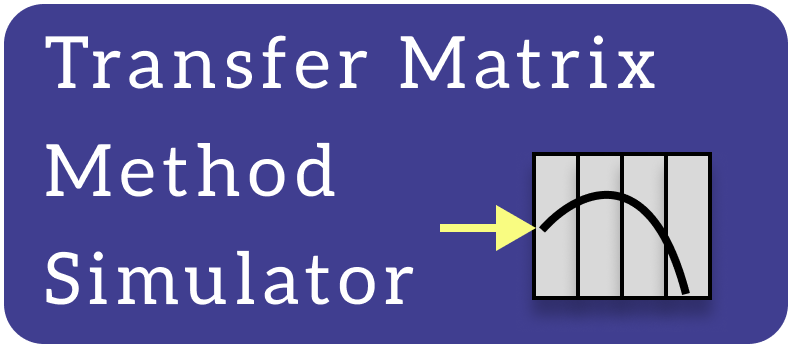

{% extends "base.html" %}
{% block title %}TMMSim{% endblock %}
{% block content %}
<div class="container fret">
  <div>
      <div class="logoWrapper">
          
      </div>
    <div>
       
    </div>
    <div>
       
    </div>
  </div>
  <div class="fret__texto">
    <form method=post enctype=multipart/form-data action="{{url_for('tmm_sim_submit')}}">
      <div class="texto__botao">
        Input file (.xlsx):<br>
        <input type="file" name="xif"><br>
      </div>             
      <div class="texto__botao">
        Enter up to 10 layer files (.csv):<br>
        <input type="file" name="layer_files" multiple><br>
      </div>
      <input type="submit" class="texto__botao texto__submitBotao" value="Click to Calculate">
    </form>
    <footer class="texto__botao texto__footer">
      <p class="texto__paragrafo"> 
        You can also download <a href="https://github.com/NanoCalc/TMM-Sim/releases/download/v1.0/spectral-data.zip"><b>sample data</b></a> 
        and <a href="https://github.com/NanoCalc/TMM-Sim/releases"><b>TMM-Sim binaries</b></a>.
      </p>
    </footer>
  </div>
</div>
{% endblock %}
